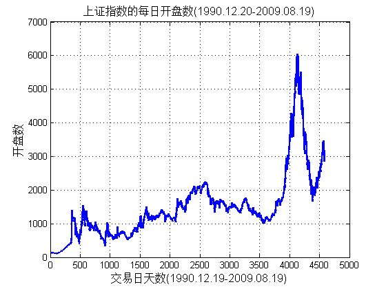
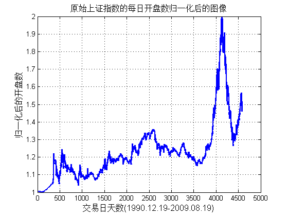
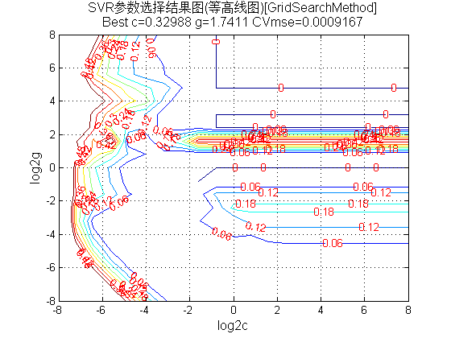
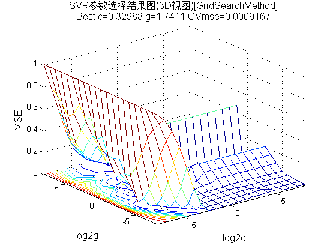
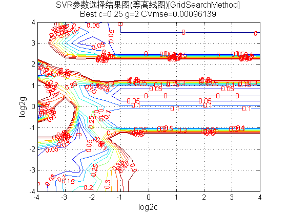
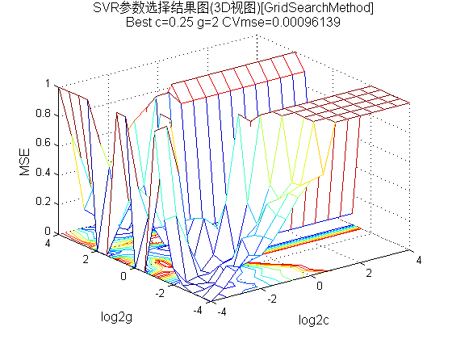
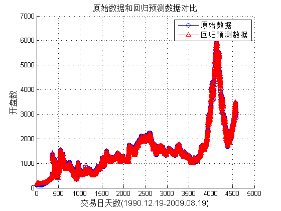
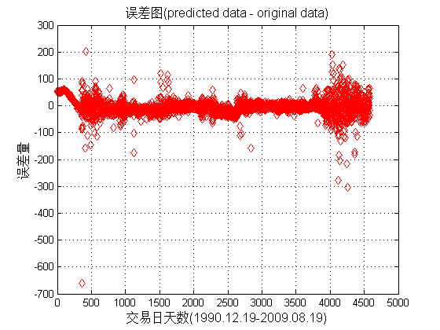
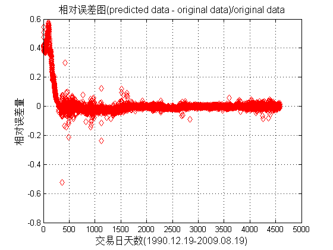

Contents
Matlab神经网络43个案例分析
清空环境变量
function chapter_sh
tic;
close all;
clear;
clc;
format compact;
数据的提取和预处理
load chapter_sh.mat;
[m,n] = size(sh);
ts = sh(2:m,1);
tsx = sh(1:m-1,:);
figure;
plot(ts,'LineWidth',2);
title('上证指数的每日开盘数(1990.12.20-2009.08.19)','FontSize',12);
xlabel('交易日天数(1990.12.19-2009.08.19)','FontSize',12);
ylabel('开盘数','FontSize',12);
grid on;
ts = ts';
tsx = tsx';
[TS,TSps] = mapminmax(ts,1,2);
figure;
plot(TS,'LineWidth',2);
title('原始上证指数的每日开盘数归一化后的图像','FontSize',12);
xlabel('交易日天数(1990.12.19-2009.08.19)','FontSize',12);
ylabel('归一化后的开盘数','FontSize',12);
grid on;
TS = TS';
[TSX,TSXps] = mapminmax(tsx,1,2);
TSX = TSX';
 
选择回归预测分析最佳的SVM参数c&g
[bestmse,bestc,bestg] = SVMcgForRegress(TS,TSX,-8,8,-8,8);
disp('打印粗略选择结果');
str = sprintf( 'Best Cross Validation MSE = %g Best c = %g Best g = %g',bestmse,bestc,bestg);
disp(str);
[bestmse,bestc,bestg] = SVMcgForRegress(TS,TSX,-4,4,-4,4,3,0.5,0.5,0.05);
disp('打印精细选择结果');
str = sprintf( 'Best Cross Validation MSE = %g Best c = %g Best g = %g',bestmse,bestc,bestg);
disp(str);
打印粗略选择结果
Best Cross Validation MSE = 0.000916702 Best c = 0.329877 Best g = 1.7411
打印精细选择结果
Best Cross Validation MSE = 0.000961388 Best c = 0.25 Best g = 2
   
利用回归预测分析最佳的参数进行SVM网络训练
cmd = ['-c ', num2str(bestc), ' -g ', num2str(bestg) , ' -s 3 -p 0.01'];
model = svmtrain(TS,TSX,cmd);
SVM网络回归预测
[predict,mse] = svmpredict(TS,TSX,model);
predict = mapminmax('reverse',predict',TSps);
predict = predict';
str = sprintf( '均方误差 MSE = %g 相关系数 R = %g%%',mse(2),mse(3)*100);
disp(str);
Mean squared error = 2.35705e-05 (regression)
Squared correlation coefficient = 0.999195 (regression)
均方误差 MSE = 2.35705e-05 相关系数 R = 99.9195%
结果分析
figure;
hold on;
plot(ts,'-o');
plot(predict,'r-^');
legend('原始数据','回归预测数据');
hold off;
title('原始数据和回归预测数据对比','FontSize',12);
xlabel('交易日天数(1990.12.19-2009.08.19)','FontSize',12);
ylabel('开盘数','FontSize',12);
grid on;
figure;
error = predict - ts';
plot(error,'rd');
title('误差图(predicted data - original data)','FontSize',12);
xlabel('交易日天数(1990.12.19-2009.08.19)','FontSize',12);
ylabel('误差量','FontSize',12);
grid on;
figure;
error = (predict - ts')./ts';
plot(error,'rd');
title('相对误差图(predicted data - original data)/original data','FontSize',12);
xlabel('交易日天数(1990.12.19-2009.08.19)','FontSize',12);
ylabel('相对误差量','FontSize',12);
grid on;
snapnow;
toc;
  
Elapsed time is 128.622808 seconds.
子函数 SVMcgForRegress.m
function [mse,bestc,bestg] = SVMcgForRegress(train_label,train,cmin,cmax,gmin,gmax,v,cstep,gstep,msestep)
if nargin < 10
msestep = 0.06;
end
if nargin < 8
cstep = 0.8;
gstep = 0.8;
end
if nargin < 7
v = 5;
end
if nargin < 5
gmax = 8;
gmin = -8;
end
if nargin < 3
cmax = 8;
cmin = -8;
end
[X,Y] = meshgrid(cmin:cstep:cmax,gmin:gstep:gmax);
[m,n] = size(X);
cg = zeros(m,n);
eps = 10^(-4);
bestc = 0;
bestg = 0;
mse = Inf;
basenum = 2;
for i = 1:m
for j = 1:n
cmd = ['-v ',num2str(v),' -c ',num2str( basenum^X(i,j) ),' -g ',num2str( basenum^Y(i,j) ),' -s 3 -p 0.1'];
cg(i,j) = svmtrain(train_label, train, cmd);
if cg(i,j) < mse
mse = cg(i,j);
bestc = basenum^X(i,j);
bestg = basenum^Y(i,j);
end
if abs( cg(i,j)-mse )<=eps && bestc > basenum^X(i,j)
mse = cg(i,j);
bestc = basenum^X(i,j);
bestg = basenum^Y(i,j);
end
end
end
[cg,ps] = mapminmax(cg,0,1);
figure;
[C,h] = contour(X,Y,cg,0:msestep:0.5);
clabel(C,h,'FontSize',10,'Color','r');
xlabel('log2c','FontSize',12);
ylabel('log2g','FontSize',12);
firstline = 'SVR参数选择结果图(等高线图)[GridSearchMethod]';
secondline = ['Best c=',num2str(bestc),' g=',num2str(bestg), ...
' CVmse=',num2str(mse)];
title({firstline;secondline},'Fontsize',12);
grid on;
figure;
meshc(X,Y,cg);
axis([cmin,cmax,gmin,gmax,0,1]);
xlabel('log2c','FontSize',12);
ylabel('log2g','FontSize',12);
zlabel('MSE','FontSize',12);
firstline = 'SVR参数选择结果图(3D视图)[GridSearchMethod]';
secondline = ['Best c=',num2str(bestc),' g=',num2str(bestg), ...
' CVmse=',num2str(mse)];
title({firstline;secondline},'Fontsize',12);